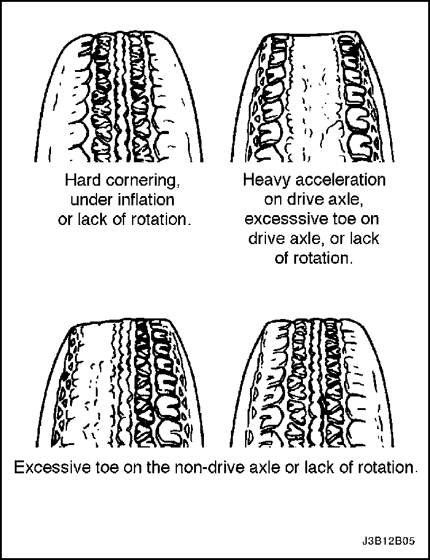
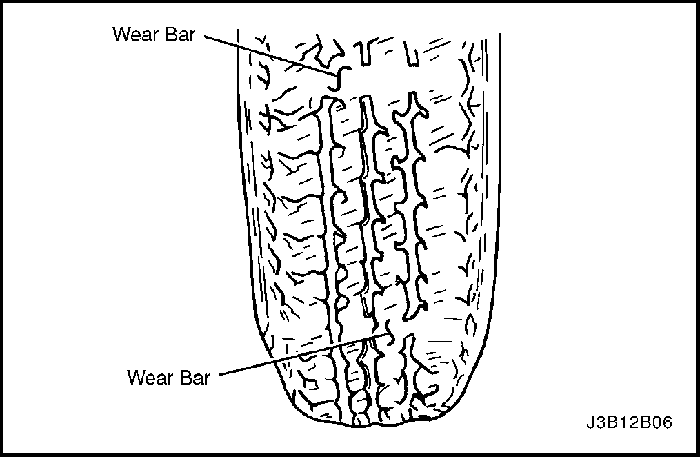
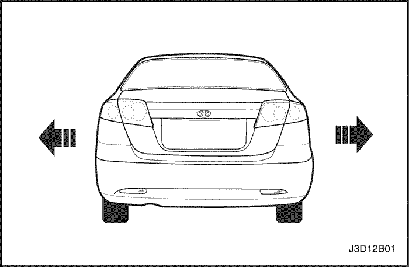
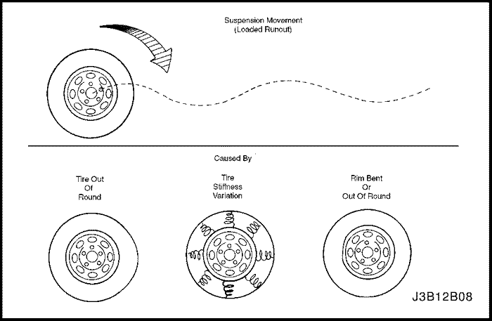
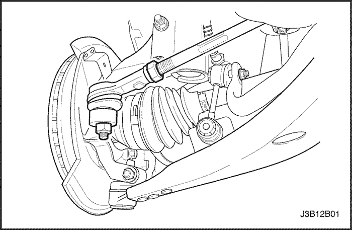
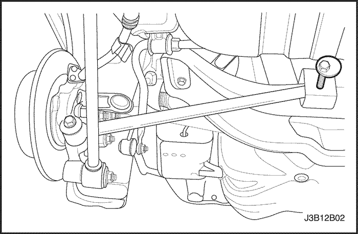
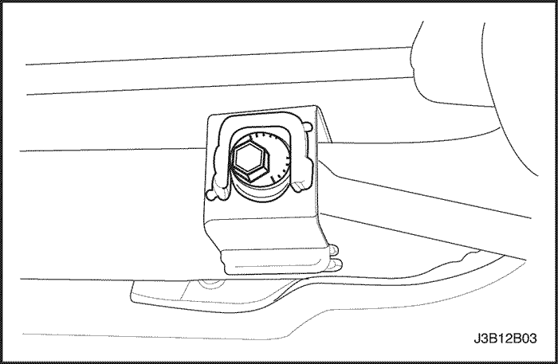
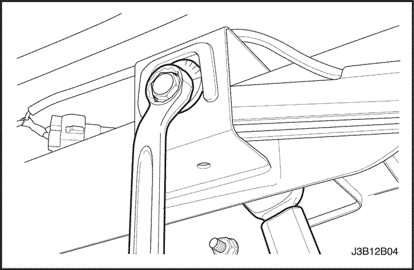

SECCIÓN 2B
ALINEACIÓN DE LAS RUEDAS
ESPECIFICACIONES
Especificaciones de alineación de las ruedas
Aplicación | Delanteras | Traseras |
Ángulo de caída | -20´ ± 45´ | -1° ± 45´ |
Ángulo de avance | 4° ± 45´ | - |
Convergencia (sin pasajeros, depósito lleno) | 0° ± 10´ | 12´ ± 10´ |
Especificaciones de apriete de la sujeción
Aplicación | N•m | Lb-pie | Lb-pulg. |
Tuerca de fijación de la barra paralela trasera al travesaño | 90 | 66 | - |
DIAGNÓSTICO
Diagnóstico de los neumáticos
Desgaste prematuro e irregular
El desgaste prematuro e irregular de los neumáticos obedece a muchas causas. Algunas de ellas son presión de inflado incorrecta, no efectuar la rotación periódica de los neumáticos, malos hábitos de conducción o alineación incorrecta de las ruedas. Si efectúa una alineación de las ruedas debido a un desgaste de los neumáticos, vuelva a ajustar la convergencia/divergencia lo más próxima posible a 0 grados, como permiten las especificaciones. Consulte el apartado
"Ajuste de la convergencia/divergencia trasera"de esta sección.
Cambie la posición de los neumáticos si:
- El desgaste de los neumáticos delanteros es diferente al de los neumáticos traseros.
- El desgaste de los neumáticos delanteros derecho e izquierdo es desigual.
- El desgaste de los neumáticos traseros derecho e izquierdo es desigual.
Compruebe la alineación de las ruedas sí:
- El desgaste de los neumáticos delanteros derecho e izquierdo es desigual.
- El desgaste es poco uniforme en la superficie de rodadura de cualquiera de los neumáticos delanteros.
- Las superficies de rodadura de los neumáticos delanteros tienen rozaduras con bordes con "flecos" en las nervaduras o tacos de los laterales de dicha bandas de rodadura.



Indicadores del desgaste de la banda de rodadura
Los neumáticos disponen de indicadores de desgaste de la banda de rodamiento, incorporados, para señalar cuando es necesario cambiar los neumáticos. Estos indicadores aparecen como bandas cuando la profundidad de la superficie de rodadura del neumático disminuye. Se recomienda cambiar los neumáticos si aparecen los indicadores en seis puntos, de tres o más de los canales de la superficie de rodadura.

Contoneo de un neumático radial
El contoneo es un movimiento de lado a lado en la parte delantera o trasera del vehículo. Este es provocado por la falta de rectitud de las bandas de acero situadas en el interior de los neumáticos o por una excentricidad lateral excesiva del neumático o de la rueda. Resulta más evidente a velocidades bajas, entre 8 y 48 km/h (5 y 30 mph), pero puede parecer dureza de marcha a 80 - 113 km/h (50 - 70 mph).
Se debe efectuar una prueba de carretera con el vehículo para determinar qué parte del mismo tiene el neumático defectuoso. La parte trasera del vehículo se moverá de un lado a otro, o se ''contoneará'', si el neumático que produce ese efecto se encuentra en la parte trasera. Desde el asiento del conductor da la sensación de que alguien estuviera empujando el vehículo de un lado a otro. Si el neumático defectuoso se encuentra en la parte delantera del vehículo, el contoneo resulta más visible. La chapa metálica delantera parece como si se moviera hacia atrás y hacia adelante, y el asiento del conductor parece el punto de giro del vehículo.
El contoneo se diagnostica utilizando el método de sustituir los conjuntos de ruedas y neumáticos del vehículo con el problema, por otros conjuntos buenos.
- Efectúe una prueba de carretera con el vehículo para determinar si el contoneo proviene de la parte delantera o trasera del vehículo.
- Monte unas ruedas y neumáticos adecuados, procedentes de un vehículo similar, en lugar de los que están causando el problema. Si el origen del contoneo no resulta evidente, cambie los neumáticos traseros.
- Efectúe una prueba en carretera con el vehículo. Si se ha producido una mejora, monte los neumáticos originales para encontrar el neumático causante del problema. Si no se produce ninguna mejora, monte neumáticos buenos en lugar de los cuatro con los que se producía el problema.
- Monte los neumáticos originales, uno cada vez, para descubrir cuál causa el problema.

Desvío/caída lateral con neumáticos radiales
El desvío/caída lateral es la desviación de una trayectoria recta, sobre una carretera llana, sin ejercer ninguna fuerza sobre el volante de la dirección. El desvío se produce generalmente por:
- Una alineación incorrecta de las ruedas.
- Un ajuste desigual de los frenos.
- La propia construcción del neumático.
La forma en que se fabrica el neumático puede producir un desvío/caída lateral en el vehículo. Las bandas descentradas de los neumáticos radiales puede provocar en el neumático la creación de una fuerza lateral cuando el vehículo rueda en línea recta por la carretera. Si el neumático de uno de los lados tiene incluso un diámetro un poquito mayor que el neumático del otro lado, el primer neumático tenderá a desviarse a un lado. Los diámetros desiguales harán que el neumático desarrolle una fuerza lateral que puede producir en el vehículo un efecto de desvío/caída lateral.
Para determinar si el problema se origina por una falta de alineación o por los propios neumáticos, debe utilizarse el cuadro de diagnóstico de desvío/caída lateral con neumáticos radiales. Una parte del procedimiento de diagnóstico del desvío exige un cambio en la posición de los neumáticos diferente al de la secuencia adecuada de rotación de los neumáticos. Si un neumático, con un kilometraje de medio a alto, se desplaza a otro lado del vehículo, asegúrese de comprobar que no se produce una marcha dura. Los neumáticos traseros no producirán el efecto desvío/caída lateral.
Cuadro de diagnóstico de desvío/caída lateral con neumáticos radiales
| Paso | Medida | Valor(es) | Sí | No |
| 1 | - Efectúe la comprobación preliminar de la alineación de las ruedas.
- Compruebe si hay arrastre de los frenos.
- Efectúe una prueba en carretera con el vehículo.
¿Sigue habiendo desvío/caída lateral? | - | Vaya al Paso 2 | Sistema OK |
| 2 | - Intercambie los conjuntos de ruedas y neumáticos delanteros.
- Efectúe una prueba en carretera con el vehículo.
¿Sigue habiendo desvío/caída lateral? | - | Vaya al Paso 3 | Sistema OK |
| 3 | Compruebe la alineación de las ruedas delanteras. ¿Se encuentra la alineación dentro de las especificaciones? | - | Vaya al Paso 4 | Ajuste la alineación |
| 4 | Compare el ángulo de caída y el ángulo de avance delanteros con las especificaciones. ¿Están ambos ángulos dentro de las especificaciones? | - | Vaya al Paso 7 | Vaya al Paso 5 |
| 5 | Compruebe el bastidor del vehículo. ¿Está deformado el bastidor? | - | Vaya al Paso 6 | Vaya al Paso 1 |
| 6 | Enderece el bastidor. ¿Se ha realizado la reparación? | - | Vaya al Paso 3 | - |
| 7 | - La causa probable son los neumáticos.
- Cambie el conjunto de rueda y neumático delantero izquierdo por el conjunto trasero izquierdo.
- Efectúe una prueba en carretera con el vehículo.
¿Sigue experimentando el vehículo desvío/caída lateral? | - | Vaya al Paso 9 | Vaya al Paso 8 |
| 8 | Cambie el conjunto de rueda y neumático delantero izquierdo por el conjunto trasero izquierdo y sustituya el neumático delantero izquierdo. ¿Se ha realizado la reparación? | - | Sistema OK | Vaya al Paso 1 |
| 9 | - Intercambie la posición del conjunto de rueda y neumático delantero derecho con el conjunto de rueda y neumático trasero derecho.
- Efectúe una prueba en carretera con el vehículo.
¿Sigue experimentando el vehículo desvío/caída lateral? | - | Vaya al Paso 1 | Vaya al Paso 10 |
| 10 | Cambie el conjunto de rueda y neumático delantero derecho por el conjunto trasero derecho y sustituya el neumático delantero derecho. ¿Se ha realizado la reparación? | - | Sistema OK | Vaya al Paso 1 |
Diagnóstico de las vibraciones
La falta de equilibrado de las ruedas es la causa principal del problema de las vibraciones debidas a velocidades de carretera. Las vibraciones pueden persistir después de efectuar un equilibrado dinámico debido a:
- Falta de redondez del neumático.
- Falta de redondez de la llanta.
- Variaciones en la rigidez del neumático.
La medición de la excentricidad libre del neumático y de la rueda servirá para descubrir solamente una parte del problema. Deben comprobarse las tres causas, conocidas como excentricidad radial en carga, utilizando el método de sustituir un conjunto de rueda y neumático, en el vehículo que tiene el problema, por otro conjunto que se sepa en buen estado.
Las vibraciones a baja velocidad, que se produzcan a menos de 64 km/h (40 mph), suelen deberse a la excentricidad. Las vibraciones a alta velocidad, que se produzcan a más de 64 km/h (40 mph), suelen deberse a la excentricidad o a la falta de equilibrado.
Comprobaciones preliminares
Antes de efectuar cualquier trabajo, efectúe siempre una prueba en carretera con el vehículo, así como una comprobación visual minuciosa de lo siguiente:
- Excentricidad obvia de la rueda y del neumático.
- Excentricidad obvia del eje motor.
- Presión de inflado incorrecta de los neumáticos.
- Altura de la suspensión incorrecta.
- Existencia de ruedas deformadas o dañadas.
- Acumulación de residuos en el neumático o la rueda.
- Desgaste irregular o excesivo de los neumáticos.
- Asiento incorrecto del talón del neumático en la llanta.
- Imperfecciones de los neumáticos, incluidas deformaciones de la banda de rodadura, separaciones o dilataciones a causa de daños por impactos. Las ligeras mellas en las paredes laterales son normales y no afectan a la calidad de suspensión.

Equilibrado de los neumáticos
El equilibrado es el procedimiento más fácil de realizar y debe efectuarse, en primer lugar, si las vibraciones se producen a alta velocidad. Efectúe primero un equilibrado en dos planos, fuera del vehículo, para corregir cualquier desequilibrio en el conjunto de la rueda y el neumático.
Un equilibrado de acabado, en el vehículo, corregirá cualquier desequilibrio en el tambor o disco de freno o en el tapacubos. Si el equilibrado no corrige las vibraciones a alta velocidad, o si las vibraciones se producen a baja velocidad, entonces la causa más probable es la excentricidad.
Excentricidad
La excentricidad puede deberse al neumático, la rueda o la forma en que ésta va acoplada al vehículo. Para investigar la posibilidad de excentricidad de la rueda, consulte los siguientes procedimientos así como la tabla de diagnóstico de esta sección:
- Si se sospecha que hay excentricidad, mida la excentricidad libre radial y lateral en el vehículo del conjunto de rueda y neumático. Consulte la Sección 2E, Neumáticos y ruedas. Tanto la excentricidad radial libre como la lateral deben ser inferiores a 1,5 mm (0,06 pulg.). Si alguna de las mediciones supera este valor, siga con el Paso 2.
- Monte el neumático y a rueda en una máquina de equilibrado dinámico y vuelva a medir la excentricidad libre radial y lateral. Registre la medición de excentricidad libre radial y lateral en la zona de mayor excentricidad. Consulte la Sección 2E, Neumáticos y ruedas. Si la excentricidad libre radial y lateral sobrepasa 1,3 mm (0,05) en la banda de rodadura, siga con el Paso 4.
- Mida la excentricidad de las ruedas. Consulte la Sección 2E, Neumáticos y ruedas. Si se sobrepasan las especificaciones de la rueda, sustitúyala.
- Desinfle el neumático y realice un montaje coincidente del punto alto de excentricidad radial del neumático y el punto bajo de excentricidad radial de la rueda. Vuelva a inflar el neumático y móntelo en una máquina de equilibrado dinámico. Mida y anote la excentricidad libre radial y lateral y tome nota de sus puntos. En muchos casos, un montaje coincidente del neumático en la rueda reducirá la excentricidad libre del conjunto de rueda y neumático a un valor aceptable de 1,3 mm (0,05 pulg.) o menos.
- Si la excentricidad libre es de 1,3 mm (0,05 pulg.) o menos cuando se midió fuera del vehículo y, sin embargo, sobrepasa los 1,3 mm (0,05 pulg.) cuando se midió en el vehículo, la causa probable de la vibración será el acoplamiento del conjunto de rueda y neumático al cubo. Gire los dos espárragos del conjunto de la rueda y vuelva a comprobar la excentricidad. Consulte la Sección 2E, Neumáticos y ruedas. Es posible que haya que probar varias posiciones hasta dar con la mejor colocación para los espárragos.
- Si no puede reducirse la excentricidad libre del conjunto de rueda y neumático a 1,3 mm (0,05 pulg.) o menos, desmonte el conjunto.
- Use un juego de reloj comparador con base magnética para medir la excentricidad del espárrago de la rueda.
- Coloque el comparador en un espárrago y póngalo a cero con el botón de puesta a cero.
- Separe con suavidad del espárrago el botón de puesta a cero. Haga girar la brida para colocar el siguiente espárrago contra el juego del comparador.
- Anote la excentricidad de todos los espárragos. El comparador debe mostrar cero cuando se vuelva a colocar en el primer espárrago comprobado.
- Si la excentricidad supera los 0,76 mm (0,03 pulg.), hay que sustituir el cubo o el conjunto de cubo y rodamientos.
Siempre que se realice la rotación de los neumáticos o que se sustituya una rueda o neumático, vuelva a equilibrar el conjunto.
Cuadro de diagnóstico de excentricidad de las ruedas
| Paso | Medida | Valor(es) | Sí | No |
| 1 | Efectúe una prueba en carretera con el vehículo para comprobar la reclamación por vibraciones. ¿Se han comprobado las preocupaciones del cliente? | - | Vaya al Paso 2 | Sistema OK |
| 2 | - Realice una comprobación preliminar del diagnóstico de las vibraciones.
- Repare cualquier anomalía que se encuentre.
¿Persiste la vibración? | - | Vaya al Paso 3 | Sistema OK |
| 3 | Determine a qué velocidad se produce la vibración. ¿Aparece la vibración a más de 64 km/h (40 mph)? | - | Vaya al Paso 4 | Vaya al Paso 6 |
| 4 | Efectúe un equilibrado dinámico de la rueda fuera del vehículo. ¿Persiste la vibración? | - | Vaya al Paso 5 | Sistema OK |
| 5 | Realice un equilibrado final en el vehículo. ¿Persiste la vibración? | - | Vaya al Paso 6 | Sistema OK |
| 6 | Efectúe una comprobación en el vehículo de la excentricidad libre radial y lateral. ¿Coincide la excentricidad con el valor especificado? | 1.5mm (0.06") | Vaya al Paso 4 | Vaya al Paso 7 |
| 7 | Efectúe una comprobación fuera del vehículo de la excentricidad libre radial y lateral. ¿Coincide la excentricidad con el valor especificado? | 1.3mm (0.05") | Vaya al Paso 8 | Vaya al Paso 12 |
| 8 | - Gradúe el conjunto de rueda y neumático en los espárragos de rueda.
- Deje la menor excentricidad posible.
¿Coincide la excentricidad con el valor especificado? | 0.76mm (0.03") | Vaya al Paso 9 | Vaya al Paso 14 |
| 9 | Efectúe un equilibrado dinámico de la rueda fuera del vehículo. ¿Persiste la vibración? | - | Vaya al Paso 10 | Sistema OK |
| 10 | Realice un equilibrado final en el vehículo. ¿Persiste la vibración? | - | Vaya al Paso 11 | Sistema OK |
| 11 | - Compruebe si hay desequilibrio de la cadena cinemática del motor.
- Inspeccione a fondo los árboles de transmisión y las juntas homocinéticas.
- Repare cualquier avería que se encuentre.
¿Se han realizado las reparaciones? | - | Vaya al Paso 1 | - |
| 12 | - Monte de modo coincidente el neumático en la rueda.
- Efectúe una comprobación fuera del vehículo de la excentricidad libre radial y lateral.
¿Coincide la excentricidad con el valor especificado? | 1.5mm (0.06") | Vaya al Paso 9 | Vaya al Paso 13 |
| 13 | - Desmonte el neumático de la rueda del conjunto sospechoso.
- Mida la excentricidad de la rueda.
¿Coincide la excentricidad con el valor especificado? | 0.8mm (0.03") | Vaya al Paso 15 | Vaya al Paso 16 |
| 14 | Mida la excentricidad del reborde del cubo de rueda. ¿Coincide la excentricidad con el valor especificado? | 0.76mm (0.03") | Vaya al Paso 9 | Vaya al Paso 17 |
| 15 | Sustituya el neumático. ¿Se ha realizado la reparación? | - | Vaya al Paso 1 | - |
| 16 | Sustituya la rueda. ¿Se ha realizado la reparación? | - | Vaya al Paso 1 | - |
| 17 | Sustituya el cubo. ¿Se ha realizado la reparación? | - | Vaya al Paso 1 | - |
Inspección preliminar
Comprobaciones | Acción |
Compruebe si la presión de inflado es correcta y si el desgaste de la banda de rodadura de los neumáticos es normal. | Infle los neumáticos a la presión correcta. Sustituya los neumáticos según necesidades. |
Compruebe el ajuste de los cojinetes de las ruedas. | Apriete la tuerca del eje según la especificación adecuada. Cambie el cojinete de rueda del soporte si fuera necesario. |
Compruebe si las rótulas y los extremos de los tirantes están flojos. | Apriete las rótulas y los tirantes. |
Compruebe la excentricidad de las ruedas y neumáticos. | Mida y corrija la excentricidad de los neumáticos. |
Compruebe las alturas de suspensión del vehículo. | Corrija las alturas de suspensión. Efectúe la corrección antes de ajustar la convergencia/divergencia. |
Compruebe si la fijación del conjunto piñón y cremallera está floja. | Apriete los soportes de fijación del conjunto piñón y cremallera. |
Compruebe si los soportes funcionan correctamente. | Sustituya el conjunto soporte. |
Compruebe si las palancas de control están flojas. | Apriete los tornillos de fijación de las palancas de control. Sustituya los casquillos de las palancas de control, si fuera necesario. |
Ajuste de la convergencia/divergencia delantera
- Desmonte los tirantes exteriores de los conjuntos de mangueta. Consulte la Sección 6C, Mecanismo de la dirección asistida.
- Haga girar los tirantes exteriores izquierdo y derecho y la tuerca del dispositivo de ajuste para alinear la convergencia/divergencia hasta 0,0 ± 0,10 grados.
- Vuelva a conectar los tirantes exteriores a los conjuntos de manguetas. Consulte la Sección 6C, Mecanismo de la dirección asistida.
Aviso: En este ajuste, la longitud de los tirantes exteriores derecho e izquierdo debe ser la misma, de otro modo los neumáticos sufrirán un desgaste desigual.

Comprobación de los ángulos de caída y de avance delanteros
Los ángulos de caída y de avance delanteros no son regulables. Consulte el apartado
"Especificaciones de alineación de las ruedas" de esta sección. Hunda y suelte el parachoques tres veces antes de medir el ángulo de caída o el ángulo de avance con el objeto de evitar una lectura incorrecta. Si las mediciones de los ángulos de caída y de avance delanteros difieren de las especificaciones, localice y sustituya o repare cualquier pieza de la suspensión dañada, suelta, deformada, abollada o desgastada. Si el problema está relacionado con la carrocería, repárela.
Comprobación del ángulo de caída trasero
El ángulo de caída trasero no es regulable. Consulte el apartado
"Especificaciones de alineación de las ruedas" de esta sección. Si el ángulo de caída trasero difiere de las especificaciones, localice la causa y corríjala. Si se encuentra alguna pieza de la suspensión que esté dañada, suelta, deformada, abollada o desgastada, debe repararse o sustituirse. Si el problema está relacionado con la carrocería, repárela.
Ajuste de la convergencia/divergencia trasera
Procedimiento de ajuste
- Realice una inspección preliminar antes de intentar cambiar o corregir los factores de alineación de las ruedas. Consulte el apartado "Inspección preliminar" de esta sección.
- Afloje las tuercas de los tornillos de fijación de las barras paralelas al travesaño.

- Haga girar los tornillos de ajuste de las barras paralelas hasta que se consiga la especificación de convergencia/divergencia trasera preferida. Consulte el apartado "Especificaciones de alineación de las ruedas" de esta sección si desea conocer las especificaciones admitidas.

- Sujete los tornillos de ajuste de las barras paralelas y apriete las tuercas de fijación de las barras paralelas al travesaño.
Apretar
Apriete las tuercas de fijación de las barras paralelas al travesaño hasta 90 N•m (66 lb-pie).

DESCRIPCIÓN GENERAL Y FUNCIONAMIENTO DEL SISTEMA
Alineación de las cuatro ruedas
La primera responsabilidad de la ingeniería es diseñar unos sistemas de suspensión y dirección seguros. Cada componente debe ser lo suficientemente resistente como para soportar y absorber esfuerzos extremos. Tanto el sistema de la dirección como el de la suspensión delantera y trasera deben funcionar, geométricamente, con la masa de la carrocería.
Los sistemas de la suspensión y de la dirección requieren que las ruedas delanteras recuperen la posición por si mismas y que el esfuerzo de rodadura del neumático y el coeficiente de rozamiento con la carretera se mantengan en unos niveles mínimos para permitirle al cliente conducir el vehículo con el mínimo esfuerzo y la máxima comodidad.
La alineación completa de las ruedas debe incluir la medición de la convergencia trasera y del ángulo de caída trasero.
La alineación de las cuatro ruedas garantiza que todas ellas rueden, de manera precisa, en la misma dirección.
Cuando el vehículo esté geométricamente alineado, la economía de combustible y la vida de los neumáticos alcanzarán su punto óptimo, mejorándose al máximo el rendimiento y la capacidad de dirección.
Convergencia/divergencia
Convergencia es el giro de los neumáticos hacia dentro, mientras que divergencia es el giro de los neumáticos hacia fuera a partir del eje geométrico o línea de empuje. La convergencia/divergencia garantiza el giro paralelo de las ruedas.
La convergencia/divergencia sirve para compensar las pequeñas desviaciones del sistema de soporte de las ruedas, que se producen cuando el vehículo se desplaza hacia adelante. El ángulo especificado de convergencia/ divergencia es aquel con el que se consigue que dicha convergencia/divergencia sea igual a 0 grados cuando el vehículo está en marcha.
Una convergencia o divergencia incorrecta provocará el desgaste de los neumáticos y una reducción en la economía del combustible. A medida que los componentes individuales de la suspensión y de la dirección van desgastándose debido al kilometraje del vehículo, será necesario una convergencia/divergencia adicional para compensar ese desgaste.
Corrija siempre en último lugar la cota de convergencia/divergencia.
Ángulo de avance
El ángulo de avance es la inclinación del punto más alto del eje de la dirección, ya sea hacia adelante o hacia atrás, con respecto a la vertical, cuando se mira el vehículo desde el lateral. La inclinación hacia atrás es negativa y la inclinación hacia adelante es positiva. El ángulo de avance ejerce una influencia sobre el control direccional pero no afecta al desgaste de los neumáticos. Unos muelles débiles o un vehículo sobrecargado afectarán al ángulo de avance. Una rueda con un ángulo de avance más positivo tendrá tendencia a desplazarse hacia el centro del coche. Esta situación provocará que el vehículo se desplace o se desvíe hacia el lado en que el ángulo de avance sea menos positivo. El ángulo de avance se mide en grados y no es regulable.
Ángulo de caída
El ángulo de caída es la inclinación de la parte superior del neumático con respecto a la vertical, cuando se mira el vehículo desde la parte delantera del mismo. Cuando el neumático se inclina hacia fuera el ángulo de caída es positivo. Cuando el neumático se inclina hacia dentro, el ángulo de caída es negativo. El ángulo de caída se mide en grados a partir de la vertical. Este ángulo ejerce una influencia tanto sobre el control direccional como sobre el desgaste de los neumáticos.
Si el vehículo dispone de un ángulo de caída demasiado positivo, se producirá un desgaste del reborde exterior del neumático. Si el vehículo dispone de un ángulo de caída demasiado negativo, se producirá el desgaste del reborde interior del neumático.
El ángulo de caída no es regulable.
Ángulo de salida del eje de dirección
El ángulo de salida del eje de dirección (SAI) es la inclinación de la parte superior de la mangueta con respecto a la vertical. Mida el ángulo de salida del eje de dirección entre la vertical real y una línea que pase por el centro del soporte y la rótula inferior según se mira el vehículo desde la parte delantera.
El SAI contribuye a que el vehículo se desplace en línea recta a lo largo de la calzada y a que la rueda retorne a su posición de marcha recta. El SAI en vehículos de tracción delantera debe ser negativo.
Ángulo incluido
El ángulo incluido es el ángulo medido entre del ángulo de caída y la línea que pasa por el centro del soporte y las rótula inferior según se mira el vehículo desde la parte delantera.
El ángulo incluido se calcula en grados. La mayoría de plataformas de alineación no medirán directamente el ángulo incluido. Para determinar el ángulo incluido, reste las lecturas negativas del ángulo de caída o sume las lecturas positivas al ángulo de salida del eje de dirección (SAI).
Radio de fricción
El radio de fricción es la distancia que hay entre la vertical real y la línea que pasa por el centro del soporte y rótula inferior hasta la superficie de la carretera. El radio de fricción se incorpora en el diseño del vehículo. El radio de fricción no es regulable.
Retroceso
El retroceso es la distancia en la cual un conjunto de cubo y rodamientos delantero se puede poner detrás de otro conjunto de cubo y rodamientos delantero. El retroceso viene provocado principalmente por un incidente de conducción o una colisión del vehículo.
Ángulo de giro
El ángulo de giro es el ángulo de que hay entre cada rueda delantera y la vertical cuando el vehículo está haciendo un giro.